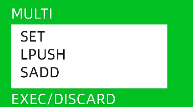

Redis
字符串¶
# 创建一个键值对:get
SET name fusi
# 获取创建的键值对:set
GET name
# 注意，Redis区分大小写
SET Name Fusi
GET Name
--> "Fusi"
# 删除一个键值对：del
DEL Name
GET Name
--> (nil)
# 删除所有键：flushAll
FLUSHALL
# 判断一个键是否存在，0不存在、1存在：exists
EXISTS name
# 查看数据库中的键：keys
KEYS *
KEYS *me
# Redis二进制安全，要显示中文，则需要使用--raw参数
quit
redis-cli --raw
# 查看过期时间，如果为-1则没有设置过期时间：TTL
TTL name
# 设置过期时间，时间单位为秒：expire
EXPIRE name 10
# 设置带有过期时间的值：setex
SETEX name 5 五秒过期
# 仅当键不存在时设置值：setnx
SETNX name value
List列表¶
# 在列表的头部添加一个元素，如果为空则创建一个新的列表：Lpush
LPUSH letter a
# 在列表的尾部添加多个元素，如果为空则创建一个新的列表：Rpush
RPUSH letter b c d
# 获取列表中的元素，-1表示倒数第一个：Lrange、Rrange
LRANGE letter 0 -1
# 删除弹出指定数量的元素：Lpop、Rpop
LPOP letter 2
# 查看元素个数：Llen
LLEN letter
# 删除修剪范围之外的元素：Ltrim、Rtrim
LTRIM letter 1 3
Set集合¶
#----- 不可重复的列表 -----#
# 添加一个元素到集合中，如果集合不存在则创建一个，可以一个也可以多个：Sadd
SADD course Redis
# 查看集合中的元素：Smembers
SMEMBERS course
# 判断一个元素是否在一个集合中，如果在返回1，不在返回0：SisMember
SISMEMBER python
# 删除一个元素：Srem
SREM course Redis
# 集合的交集、并集与差集等：Sinter、Sunion、Sdiff
SortedSet有序集合¶
#---- 有序集合中的每个元素都需要关联一个浮点数，根据浮点数从小到大排列 ----#
# 添加元素：Zadd
ZADD result 680 清华 660 北大 650 复旦
# 展示元素，一般只展示元素，如果希望同时展示浮点数，则添加上withscores：Zrange
ZRANGE result 0 -1
# 查看元素对应的浮点数：Zscore
ZSCORE result 清华
# 查看从小到大的排名：Zrank
ZRANK result 清华
# 查看从大到小的排名：ZrevRank
ZREARANK result 清华
# 删除元素：Zrem
Hash哈希¶
#--- 键值对的集合，特别适合用来存储对象 ---#
# 添加键值对：Hset
HSET person name fusi age 100
# 获取信息：Hget、HgetAll
HGET person name
HGETALL person
# 删除键值对：Hdel
HDEL person age
# 判断键值对是否存在：Hexists
HEXISTS person name
# 获取键以及获取数量：Hkeys、Hlen
HKEYS person
发布订阅模式¶
发布订阅模式是一种消息传递模式，其中发布者（publisher）将消息发布到特定的频道（channel），订阅者（subscriber）则订阅这些频道以接收消息。发布者和订阅者之间没有直接的联系，消息的传递是通过Redis服务器来实现的。
在Redis中，可以使用publish命令将消息发布到指定的频道，订阅者可以使用subscribe命令来订阅这些频道。当有新的消息发布到频道中时，Redis服务器会将消息发送给所有订阅了该频道的订阅者。
订阅模式的局限性：无法获取历史消息、无法选择性接收消息、单向传递、性能可能下降、不支持持久化
Stream流¶
Stream流可以解决订阅模式的一些问题，以x开头
# 添加消息，星号表示自动生成消息id：Xadd 频道 ID 消息
XADD fusi * course redis
# 查看消息数量：Xlen
# 查看消息内容，使用-+表示所有消息：Xranger
Xranger fusi - +
# 删除消息，使用的是消息的id：Xdel
# 修剪消息：Xtrim
# 读取消息，streams后面跟消息名称 以及开始位置：Xread
# count表示一次读取两条消息、block表示没有消息就阻塞1000毫秒
XREAD count 2 block 1000 Streams fusi 0
# 消费者组：Xgroup
XGROUP CREATE xixifu group1 0 # 创建消费者组
XINFO GROUPS xixifu # 查看消费者组的信息
XGROUP Createconsumer xixifu group1 consumer1 # 添加一个消费者consumer1
Geospatial地理空间¶
# 添加地理位置：GEOadd
GEOADD city 经度 维度 位置
GEOADD city 116.405285 39.904989 beijing
# 获取地理位置经纬度：GEOpos
GEOPOS city beijing
# 获取两个位置之间的距离，默认单位为m，可以加后缀改成km：GEOdist
GEODIST city beijing shanghai KM
# 搜索范围以内的城市：GEOsearch
# frommember:目标城市；byradius：半径范围内
GEOSEARCH city frommember shanghai byradius 300 KM
HyperLogLog¶
HyperLogLog是一种概率性数据结构，用于统计元素的基数（cardinality），即元素的个数。它可以通过很少的内存空间来估计非常大的数据集的基数，且估计误差很小。
HyperLogLog适用于需要统计大数据集的基数的场景，例如网站的独立访客数、搜索引擎的独立查询数等。
在Redis中，可以使用PFADD命令将元素添加到HyperLogLog中，使用PFCOUNT命令来估计基数。
# 添加元素到HyperLogLog中：PFadd
PFADD course git docker redis
# 查看基数：PFcount
PFCOUNT course
# 合并两个集合：PFmerge
PFMERGE result course course2
Bitmap位图¶
位图是字符串类型的扩展，可以使用一个string类型来模拟一个bit数组，数组的下标就是偏移量，值只有0和1，支持bit运算，例如：与 非 异或等等
多用于二元对立的情况，例如：签到、在线、点赞、收藏之类
# 设置位图中的偏移量的值，例如有两个偏移量的值，第一个表示位置，第二个表示值：setBIT
SETBIT dianzan 0 1
SETBIT dianzan 1 0
# 查看位图中的偏移量的值：getBIT
GETBIT dianzan 0
# 可以使用字符串一次性设置多个值，例如有8个偏移量的值
SET dianzan "\xF0"
# 统计一个bit中有几个1：BITcount
BITCOUNT dianzan
# 获取bit中第一个出现的0或者1的位置：BITpos
BITPOS dianzan 0
Bitfield位域¶
位域可以将几个较小的整数存到一个较大的位图中，从而高效的使用内存
# 创建一个位域并存入数据，这里u8表示一个8位的无符号整数、#0表示第一个位置：BITfield
BITFIELD player:1 set u8 #0 1
BITFIELD player:1 set u32 #1 100
get player:1
--> "\x01"
# 查看具体内容：BITfield
BITFIELD palyer:1 set u8 #0
事务¶

在Redis中，事务并不能保证所有的命令都会执行成功，执行结果取决于事务中的命令
- 在发送exec命令之前，所有的命令都会被放入到一个队列中缓存起来，不会立即执行
- 在收到exec命令之后，事务开始执行，事务中的任意一个命令执行失败，其他命令依然会被执行
- 在事务执行过程中，其他客户端提交的命令请求，并不会被插入到事务的执行命令序列中
Redis持久化¶
两种方式实现Redis的持久化
- RDB: 在指定时间间隔内，将内存中的数据快照写入磁盘，是某一时间点上的完整数据副本，可以通过配置文件的save参数配置
- AOF：追加文件，在执行写命令的时候，不仅会将命令写入到内存中，还会将命令写入到一个追加的AOF文件中
主从复制¶
Redis的主从复制是一种数据备份和读写分离的技术。
主节点接收客户端的写请求，将操作日志异步地发送给从节点，从节点在自己的内存中执行相同的写操作，保持和主节点数据的一致性。
主从复制可以提高数据的可用性和读写性能，实现数据的备份和恢复。
#--- 主节点不需要任何配置，默认就是主节点 ---#
# 方式一 ：使用命令行配置，不常用
replicaof host port
slaveof host port
# 方式二 ：修改配置文件，一般是redis安装目录下的redis.conf
哨兵模式¶
哨兵会以一个独立的进程，运行在Redis集群中，用来监控Redis集群中的每一个节点是否运行正常
- 监控：通过不断发送命令，来检查Redis节点是否正常
- 通知：如果发现某个节点出现问题，会通过发布订阅模式通知其他节点
- 自动故障转移：当主节点不能正常工作时，会将一个从节点升级为新的主节点，并改变其他从节点的指向